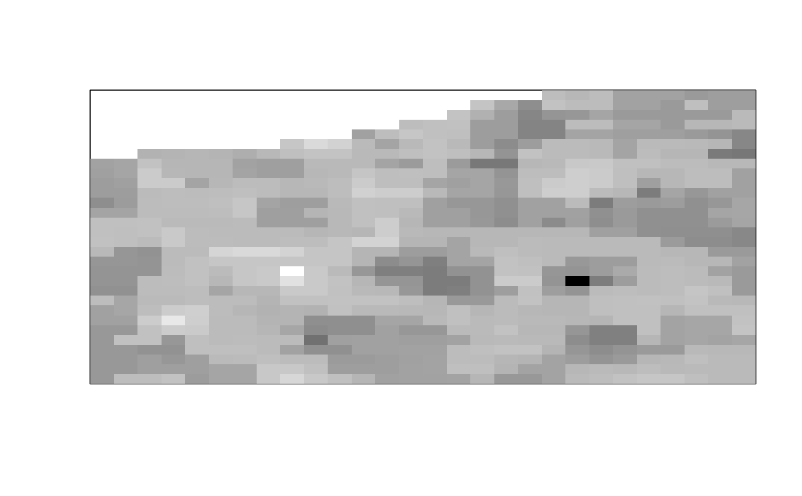

Given a time stack of images and two channels, calculate the cross-correlated number of those two channels for each pixel.
cc_number(
img,
ch1 = 1,
ch2 = 2,
thresh = NULL,
detrend = FALSE,
quick = FALSE,
filt = NULL,
parallel = FALSE
)A 4-dimensional array of images indexed by img[y, x, channel, frame] (an object of class ijtiff::ijtiff_img). The image to perform the
calculation on. To perform this on a file that has not yet been read in,
set this argument to the path to that file (a string).
A natural number. The index of the first channel to use.
A natural number. The index of the second channel to use.
Do you want to apply an intensity threshold prior to
calculating cross-correlated number (via
autothresholdr::mean_stack_thresh())? If so, set your thresholding method
here. If this is a single value, that same threshold will be applied to
both channels. If this is a length-2 vector or list, then these two
thresholds will be applied to channels 1 and 2 respectively. A value of
NA for either channel gives no thresholding for that channel.
Detrend your data with detrendr::img_detrend_rh(). This is
the best known detrending method for brightness analysis. For more
fine-grained control over your detrending, use the detrendr package. To
detrend one channel and not the other, specify this as a length 2 vector.
FALSE repeats the detrending procedure (which has some inherent
randomness) a few times to hone in on the best detrend. TRUE is quicker,
performing the routine only once. FALSE is better.
Do you want to smooth (filt = 'smooth') or median (filt = 'median') filter the cross-correlated number image using smooth_filter()
or median_filter() respectively? If selected, these are invoked here with
a filter radius of 1 and with the option na_count = TRUE. A value of NA
for either channel gives no thresholding for that channel. If you want to
smooth/median filter the cross-correlated number image in a different way,
first calculate the cross-correlated numbers without filtering (filt = NULL) using this function and then perform your desired filtering routine
on the result.
Would you like to use multiple cores to speed up this
function? If so, set the number of cores here, or to use all available
cores, use parallel = TRUE.
A numeric matrix, the cross-correlated number image.
# \donttest{
img <- ijtiff::read_tif(system.file("extdata", "two_ch.tif",
package = "nandb"
))
#> Reading two_ch.tif: an 8-bit, 30x28 pixel image of unsigned
#> integer type. Reading 2 channels and 100 frames . . .
#> Done.
ijtiff::display(detrendr::mean_pillars(img[, , 1, ]))
#> Using basic display functionality.
#> * For better display functionality, install the EBImage package.
#> * To install `EBImage`:
#> - Install `BiocManager` with `install.packages("BiocManager")`.
#> - Then run `BiocManager::install("EBImage")`.
ijtiff::display(detrendr::mean_pillars(img[, , 2, ]))
#> Using basic display functionality.
#> * For better display functionality, install the EBImage package.
#> * To install `EBImage`:
#> - Install `BiocManager` with `install.packages("BiocManager")`.
#> - Then run `BiocManager::install("EBImage")`.
n <- number(img, def = "n", thresh = "Huang", filt = "median")
ijtiff::display(n[, , 1, 1])
#> Using basic display functionality.
#> * For better display functionality, install the EBImage package.
#> * To install `EBImage`:
#> - Install `BiocManager` with `install.packages("BiocManager")`.
#> - Then run `BiocManager::install("EBImage")`.

ijtiff::display(n[, , 2, 1])
#> Using basic display functionality.
#> * For better display functionality, install the EBImage package.
#> * To install `EBImage`:
#> - Install `BiocManager` with `install.packages("BiocManager")`.
#> - Then run `BiocManager::install("EBImage")`.
cc_n <- cc_number(img, thresh = "Huang")
ijtiff::display(cc_n[, , 1, 1])
#> Using basic display functionality.
#> * For better display functionality, install the EBImage package.
#> * To install `EBImage`:
#> - Install `BiocManager` with `install.packages("BiocManager")`.
#> - Then run `BiocManager::install("EBImage")`.
# }